PCSAT-1, Amateur Radio Satellite NO-44
PCSAT-1, Amateur Radio Satellite NO-44
New OSCAR-44. object number 26931 --- PCsat
FREQUENCY: 145.825 MHz.
DIGIPEATER PATH: via PCSAT-1 (or via ARISS if enabled)
PCSAT Command Station, Bob Bruninga, WB4APR
PCSAT-1, Amateur Radio Satellite NO-44
PCsat-1 in orbit since 2001 semi-operational
ARISS on the ISS since 2007
Psat Operational May 2015
BRICSAT-1 launched with PSAT, but insufficient power budget
QIKcom-1 sat on ISS for over a year. By time of release, host never powered up
QIKcom-2 Pulled from launch at last minute due to FCC insistance on DoD license
PSAT-2 Launched 25 Jun 2019
BRICSAT-2 Launched with PSAT2 in June 2019
ASTARS missions: Prior 3 decades of APRS missions on other spacecraft, ISS, Shuttle and MIR
Some old photos: Back in 2001 we didnt take a lot of photos. But before they are all lost, here are a few I found of the real PCSAT before it flew:
UPDATE 31 July 2015: In poor eclipse seasons, PCSAT crashes without power on every orbit when it passes into eclipse. When it repowers on the next orbit, it enters a SAFE Recovery mode (W3ADO-1 callsign) with its backup USA transmitter enabled in case the primary transmitter has failed. Unfortunately, that backup transmitter on the USA APRS frequency of 144.39 is the weak signal part of the band in Europe and can be heard by Meteor Scatter operators. We must remind all users worldwide that W3ADO-1 is not to be used as a digipeater while in this mode. This is the "crash" rule after #9 in the PCSAT User Service Agreement. This Recovery mode uses the callsign W3ADO-1 and is not authorized for digipeating use. When PCSAT is available for use, then its aliases are PCSAT, ARISS and APRSAT. These are diabled in this W3ADO-1 safe condition. Attempts to digipeat via the Recovery callsign of W3ADO-1 are not authorized and cause interference to weak signal operators in Europe..
PCSAT SOLAR PANELS: PCSAT pioneered the use of innexpensive Tedlar coated solar panels in space for low cost short duration missions. These panels are off the shelf and cost less than 1% of the cost of normal space rated panels, yet they provide about 50% of the performance and life. About half way down this page you can see how we used 4 of these $30 panels for each side of PCSAT. Or you can see how we built our first 5" cubesat using one panel per side. See photo.
Operations 2014: Wow, 6 years since last time we commanded or at least updated the web page! But PCSAT continues to operate every day now for 13 years. Though we seem to no longer be able to recover it from reset mode. You can see its live downlink. On 3 April 2014 we logged on and recorded 4 minutes of solar panel data and plotted the Z axis solar currents and determined that she is spinning at one revolution per 100 seconds or 0.6 RPM the same as it was 12 years ago. So the passive black/white differential solar radiative pressure spin system is still working fine. You can see the black/white equitorial antennas here.
Typical Full Recovery Attempt (Dec 2008):
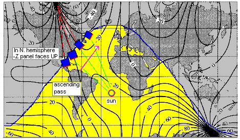 1220z 14 Dec - No Joy: Signals too weak, and sun angle worsening. We wish to thank those many volunteer ground stations around the world that worked so hard to attempt this season's recovery. Some may continue to try, so we ask digipeater users to continue holding off their packets for another week. But on 24 December 2008 when PCSAT re-enters eclipses and full recovery is no longer possible, then PCSAT will return to semi-operational status. If you ever see us commanding, please cease any transmissions.
1325z 12 Dec - No Joy: Still too many user packets robbing power when PCSAT is over USA. No success.
1145z 12 Dec - No Joy: Plotted packets heard vs latitude, and optimum is best
between 35 to 40 deg ascending over Atlantic (no user packets).
1658z 11 Dec - Hawaii: Ron reports a few packets. Later pass over USA and PCSAT is dead again.
1530z 11 Dec - Recovery Holding: pcsat.aprs.org data appears to show NODIGI and PCSAT-11 are on separate freqs.
1350z 11 Dec - Recovery Holding: Side A is holding, but ctr-B XMTR cross-connect was not. Restored.
1210z 11 Dec - Success: Set NODIGI and low power modes.
1615z 10 Dec - No Joy: Too high latitude. Can only get in on N.bound pass around 30 deg Lat due to Sun.
1430z 10 Dec - No Joy: Could not get logged on. One user hit it at same time as us and killed it.
1245z 10 Dec - Success: Logged on. Set low power mode, digi off.
Lets hope it holds. If good for 2 orbits, will enable digi.
1640z 09 Dec - No Joy: Missed best sun angle
(below 45 deg Lat). Above 50 deg latitude PCSAT was silent. Last pass of day.
1500z 09 Dec - No Joy: The first sun pass did not hold. Too many user
packets still using W3ADO-1, consuming critical power.
1315z 09 Dec - Success: Logged on, set low power, set NODIGI.
We think it had reset before the end of the pass.
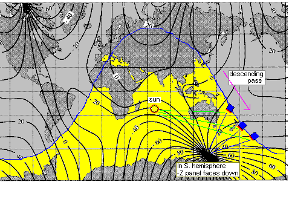
Importance of Magnetic Field and Latitude: The plots below show the impact of the -Z panel facing the south pole. The magnetic field lines have an impact as much as 40 degrees East and West on the attitude. (and almost 180 degrees on up/down attitude not shown here). So the East/West offsets are to our advantage during ascending passes on the East coast and descending passses over the West coast and NewZealand. The +Z panel faces UP away from Earth in the Northern Hemisphere and down towards Earth in the Southern hemisphere. The blue line is both the ground-track of PCSAT and also the DAY/NIGHT terminator and is the only time we can recover PCSAT becuse it is in full sun throughout the orbit for about one week..
Although this is the only time we can get a full receovery and stay alive due to full Sun (when the ground track is over the terminator), you can see from these two plots it is also the worst time for getting Sun on our South facing best panel. What would really be valuable is a visualization model on STK that would help us visualize sun on the -Z panel and therefore when to take our best shot at commanding...
HELP: . We cannot recover PCSAT-1 to full operation if the uplink is satruated by packets, nor can we recover W3ADO-1 command link if users are digipeating packets that consume valuable power while we are trying to recover. We must get several successfull packets and then a full orbit with no usage before we can restore normal operation. This is hard to do. The use of the W3ADO-1 callsign is not authorized and interferes with recovery attempts.
THIS PAGE MOVED around 2008?: The original Naval Academy PCSAT web page was recovered to this APRS.org site, but some links in the remiander of this page maybe did not crossover well...
The remainder of this Page is in reverse chronological order. Newest stuff is first.
See also the PCSAT live downlink page
(last 50 stations heard via PCsat).
DEC 2008 OPERATING WINDOW: . PCSAT-1 will enter full sun on 9 Dec and after restoration, and one orbit to fully charge, should be usable in normal mode. This is exciting because the ISS packet station may also be in APRS packet mode allowing for a combined user access time of as many as 12 passes per day. THis is because both ISS and PCSAT use the same digipeating aliases of ARISS. . With this kind of access, it is a good time to conduct a Satellite Simulated Emergency Test (SSET) also. . We expect normal operations through about Christmas eve, 24 Dec. . Then on the first user overload after that, it will crash again and be unuseable until the next full sun period in Feb 2009.
FEB 2008 OPERATING WINDOW: . PCSAT-1 entered full sun on 9 Feb and will be fully operational in support of the AMSAT Satellite Simulated Emergency Test (SSET). . This test demonstrates the ability of Amateur Satellite operators to send emergency messages from a devistated area using simple handheld or mobile radios. . This period, no attempt will be made to keep the satellite loaded with the PCSAT-1 callsign. . We are using side B for keeping the commands loaded to maintain positive power budget, but isolating both sides so that crashes on side A to not affect side B.
ALIASES SUPPORTED: ARISS, APRSAT and PCSAT-1.
 FALL 2007 OPERATING WINDOW: . PCSAT-1 was fully operational from
2 to 20 November 2007 . During this full sun period,
PCSAT-1 shared the 145.825 MHz
frequency with ANDE and the
ISS for a great multi-satellite
constellation period in support of the first
SSET.
. Some dual hop packets were also recorded. . At the same
time the GO32 Satellite is also fully supporting
APRS communications (at 9600 baud). .
FALL 2007 OPERATING WINDOW: . PCSAT-1 was fully operational from
2 to 20 November 2007 . During this full sun period,
PCSAT-1 shared the 145.825 MHz
frequency with ANDE and the
ISS for a great multi-satellite
constellation period in support of the first
SSET.
. Some dual hop packets were also recorded. . At the same
time the GO32 Satellite is also fully supporting
APRS communications (at 9600 baud). .
During this operating period a new operating technique was implemented to reduce the number of duplicate packets being attempted by users. By changing the aliases on PCSAT-1 to only support the WIDEn-N path, the satellite could enfore a restriction of only one duplicate packet per minute per user. This significanly reduced the overload conditions over Europe. See how the WIDEn-N configuration works to reduce channel load.
JANUARY 2007 OPERATING WINDOW: This PCSAT-1 full-sun recovery period lasted from 1 to 19 Jan 07 and saw one of the highest activity periods in years (over 100 users per day). This was heightened by the deployment of ANDE and RAFT on 21 Dec 06 to join PCSAT-1 as a constellation of three APRS digipeating satellites on 145.825. PCSAT-1 continued to operate back into eclipses up to 28 minutes long (out of a max of 35) before it was lost again on the 19th.
FALL 2006 OPERATING WINDOW: From 26 Sept to 11 Oct 2006, PCSAT-1 was fully operational in full Southern Sun. When recovered, she operates as PCSAT-1 and supports the aliases of APRSAT, ARISS and WIDEn-N. If you see the default W3ADO-1 callsign then she is running down every orbit in the dark and does not have enough energy for most packets. This call should not be used for digipeating!
SPRING 2006, JOINT OPS WITH PCSAT2: The spring full sun period lasted 16 days from 8 to 24 March 2006. On the 10th, its companion PCSAT2 on the ISS was switched to 145.825 for joint operations to experiment with dual satellite-to-satellite hops. Many dual hop packets were observed including this longest path so far as shown at right: ==>
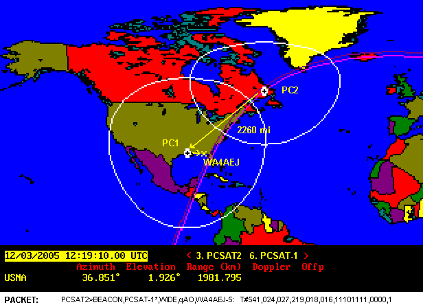
SPECIAL EVENT 2 Dec 2005. Annual Army/Navy game Football Run: PCSAT-1 participated in this annual event by supporting position reporting and tracking of the special Army/Navy game ball from Annapolis to Phily. The 120+ students in the 13th company each run the ball in relay teams over the 128 miles from Noon on Friday to arrive for the game the next morning.
FALL 2005, OPS NORMAL 25 Nov to 17 Dec 2005:: During this full sun operating period, we switched PCSAT2 to the 145.825 frequency for joint dual-satellite operations with PCSAT-1. The image at right shows the double hop telemetry packet we received from PCSAT2 via PCSAT-1 and you can see the later 12/05 pass too.
JANUARY 2005 JOINT PCSAT/ISS TEST: From 24 Jan to 16 Feb, PCSAT-1 was recovered to full operation. On 2 to 4 Feb 2005, the ARISS packet system on ISS moved to the PCSAT frequency of 145.825 for joint operations with PCSAT. In addition to doubling APRS satellite coverage for several days, we detected 3 successful dual-satellite communications paths. Very high activity was observed on both systems. . Typically 70 or more operators per day...
PCsat Model On Display: at the Udvar-Hazy Smithsonian Space Center near Dulles Airport. photo.
OPERATING GUIDELINES: During normal operations, users are requested to only operate in accordance with the User Service Agreement
FALL 2004 OPERATING PERIOD: PCSAT-1 operated for a month starting 24 Oct 2004.
DECEMBER 2003 OPERATING PERIOD: PCSAT-1 was recovered for month starting on 15 Dec 2003, when her orbit entered a period of full sun. As of 1 Feb 2005, PCSAT-1 will have logged 42 months in space and has logged over 2678 individual users.
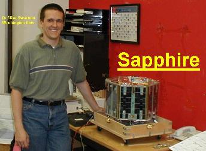
Magnetic Stabalization: See plot of +Z current versus latitude that confirms our passive magnetic attitude alignment.
Sapphire Revived! On 5 Nov, 2003, Mineo Wakita, JE9PEL, a JAMSAT member sent the RESET commands to Sapphire and this allowed command stations to regain control of this satellite. Sapphire and PCsat were launched on the same launcher and Sapphire is a joint project between the Naval Acadmey and the builders of Sapphire at Washington University and earlier at Stanford. (See original Sapphire WEB page) . Now Sapphire joins PCsat as a digipeater in the APRS constellation of satellites called ASTARS.
FALL 2003, OPERATING PERIOD: PCSAT-1 returned to full health from 13 Sept to 9 Oct 2003 in full Sun and supported 50+ users a day on the live downlink page!
FULL SUN PERIODS: PCSAT-1 was prematurely declared dead when she would not respond
during the last phase of full Sun, on 10 July. Subsequently we discovered
that she works quite well even during
max eclipses when the +Z solar panel (our best)
during a noon time northern hemisphere pass is pointed
directly at the Sun. .
Since we are having student telemetry labs soon, here are some capture files the
students took of high-rate telemetry this month.
Click here for our Telemetry format and equations for use in decoding these files.
PREMATURE EPITAPH (posted July 17th): PCsat appears to have died after 21 months, 10 days. We commanded her well on 10 July (both sides), but she did not make it to the 17-31 July full sun period when we expected her to bounce back to life. She died 7 days short. . [POSTSCRIPT: We have since learned that she dies every summer even in full sun, while she is fully recoverable evey winter in full sun...]
SPECIAL EVENT, FIELD DAY 2003: We were able to properly configure PCsat for two passes over the National Emergency Communications weekend called Field Day (last weekend in June). On Saturday, an hour before FD officially began, and then Sunday, one hour before it ended:
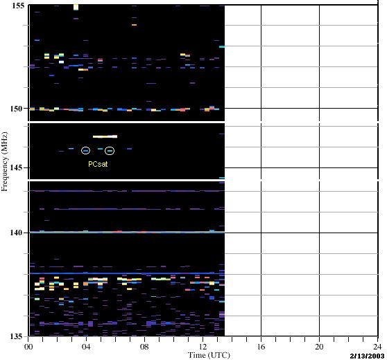 END OF MISSION: PCsat was in full sun 10-20 April 2003 and continued to be power positive until 26 April. At that point it was back into heavy eclipses and the batteries were so weak that even in the sun, they can barely support a single packet. For official purposes, we declared PCsat mission as complete. It operated reliably for 19 months and supported over 2000 users worldwide. We were seeing typically 50 users in each 8 hour period on pcsat.aprs.org. So she has been well used. PCsat will remain ON for continued experimentation, but the only packets you can probably get through PCsat now are very short ones. Here are several ways to generate short packets:
RECENT NORMAL OPERATIONS: PCsat was in full sun 11-26 Feb and continued normal operations in positive power budget for 47 days to 30 Mar 2003. Prior to that, the previous Full Sun period was 9-22 Nov 2002. But with dilligant oversight by the command stations around the world keeping her in low power modes, she was fully operational until a reset on 1 Jan 03 during a nighttime pass over Europe which put her back in daylight-only operations. PCsat is always usable during the day. As of 14 Feb 2003 over 1950 stations had used PCsat See list.
BBS EXPERIMENT: During the March full sun period, we activated the PCSAT BBS. It has no RAM backup battery, so it was never a formal part of the PCSAT mission, but during the 2 week period, over 70 users sent and received messages via the BBS. The BBS is now OFF and should not be used. It is a power hog due to all the RETRIES and inefficiencies of trying to use connected packet on a satellite and as such was never part of the mission.
HARP DETECTION:ex-N5JXU alerted us to the WEB page for the HARP radar in Alaska. It captured PCSAT as shown at right. This chart is a waterfall plot of the readings taken by the HARP Monitor. Spectrum samples are taken at 20 minute intervals throughout the day. The color indicates intensity, from deep blue to red.
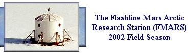 There are a few remote environmental sensor projects that use PCsat or its cousins of ISS or UO22 for reporting remote data back to the worldwide APRS system. This one is in the Arctic and there are two in Antarctica. See more about Buoys
.
PCSAT FOLLOW-ON MISSIONS: The next two PCsat type digipeaters in work
are the
ANDE experiment which is a 1 year battery powered digipeater and
PCSAT2 which is a 1 year external attachment for the ISS.
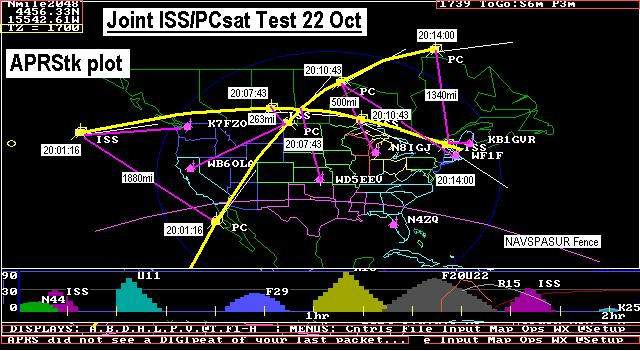 SPECIAL JOINT ISS TEST: From 11 Oct to 30 Oct 2002, the ISS digipeater QSY'ed from its normal 145.800 frequency to join PCsat on 145.825 for some joint operations tests flying as the first ever two satellite constellation in the Amateur Satellite Service. The test was successfulwith 13 stations completing double hop packets between both spacecraft over distances as great as 1880 miles. See the Summary Report or original Test Plan. The following image from APRStk.exe shows the geometry of the second reported success on 22 October over the USA.
This second test followed 6 days of ISS being off the air. This time K7FZO on the west
coast was the first successful packet and established a new DX record for joint satellite
hop of 1880 miles. At the end of the pass over the East Coast, another DX hop of
1340 miles was made by KB1GVR in Maine.
Click for Details
Previously on 12 October were the first 5 successes over the East coast of the USA as
shown below.
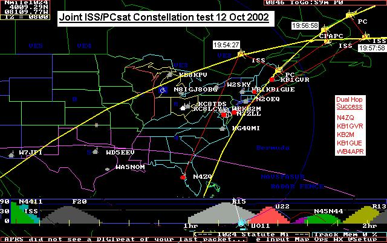
At 19:54:27 N4ZQ got the first dual hop packet through ISS and then PCsat. Then a minute
later as PCsat passed directly overhead of ISS by 420 km, the other 4 successful packets
followed over the next minute, ending at 19:57:58.
Click for Details.
HERE IS WHERE THE ORIGINAL PCSAT BACKGROUND WEB PAGE BEGINS:
PCsat, a Prototype Communications Satellite, is a US Naval Academy Aerospace student project designed to give students real hands on experience in satellite design and operations. This web page is frequently updated with current information about the Satellite operations. New information is added at the top of the page. Go further down to get the original background information if this is your first visit.
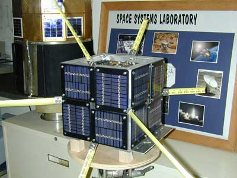 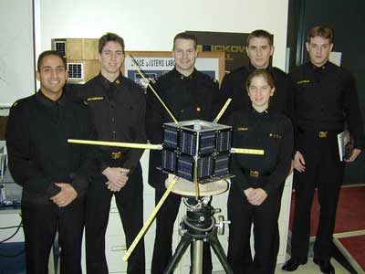
RECENT ACTIVITY: PCsat was in full Sun 20-29 Sept, and supported full GPS operations then. PCsat also completed its one-year anniversary at 0240z on 30 Sept 2002. See note. On 2 October, eclipses were up to 27 minutes long, but PCsat was still holding its command set without a reset. But as soon as we get a reset, PCsat will be back to SUNSHINE only operations as she continues to deep cycle her Nicads on every orbit to eventual failure.
SUMMER SUMMARY: Between 6 to 16 August, PCsat returned to normal ops (Day and night) as eclipse periods dropped from the usual 35% down to 30% thus improving the power budget into positive range for about a week. We conducted comms experiments with four of our sailboats on summer cruise and tracked them automatically on almost every pass. Ted Rogers KH6JJD made this summary and this detail plot of his satellite successes from his boat. On 16 Aug, PCsat returned to DAYLIGHT only operations.
PCsat was in full Sun from 8-23 June and was fully operational for a variety of GPS
tests. Unfortunately due to an erroneous GPS command, we ran the batteries down
overnight before Field Day so that PCsat was quite unusable on 22 June.
But by the next day, PCsat was back to full power and with many new
users. On 27 June we conducted a USER LOAD test and with 56 users trying, we achieved
a 97% success rate. (See report). Also during this time
we were able to complete analysis on the following data:
See 16 hour plot of Battery volts
Solar Panel Spin Plot
GPS SNR Spin Plot
From 10 May to 8 June, PCsat was in maximum eclipse cycle and we had to turn off the digi. When we do this, the callsign changes to NODIGI as a means of alterting USERS to this situation. PCsat is now in its fourth such low power period where it experiences over 380 deep cycles on its batteries... See 6 Mar-10 Apr report, and recovery! During these periods we depend on the dedicated efforts of G6LVB, IT9GSV, LU7ABF, LW2DTZ, VK3JT, WB4APR, ZL1AOX, ZR1FN, ZR1CBC, VK2XGJ, to keep us in the best power situation...
See the Full Analysis and plots of PCsats Orientation with the sun and predictions of improving solar angles!
NEW ITEMS:
PCsat Operations at Field Day 2002
ISS-PCsat joint test plan (A short test to fly to DIGI's in space on same frequency)
EZNEC Plot of PCsat GPS antenna.
USER LOG as of 9 April (1118 calls). Produced from Steve
Dimse's FINDU.COM.
Z axis Wobble as determined from +Z array currents.
Solar Incidence angle and its effect on the loss of the -Z panel (by ZR1CBC).
Solar Panel I-V curves. and Solar Panel Power Plot. .
Graphics Telemetry Summary
SAPPHIRE Activated: On 28 Jan, Sapphire has been activated for APRS/UI digipeating on a limited basis (no unattended operation). Please review the user service agreement . for details.
PRI-COMM Activated: On 24 Jan we activated the experimental PRI-COM feature on PCsat which can capture Emergency and Priority messages from the THD7 and D700 anywhere on the planet and hold them for retransmission over the USA on 144.39. See details. VE4DS is our first user as he drives the 300km ice bridge in the Canadian Northwest Territories. The first Remote Traveler.
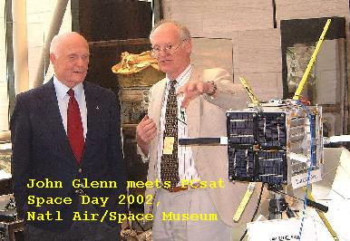
OPERATING ITEMS and EVENTS:
PCsat, a Prototype Communications Satellite, is a US Naval Academy Aerospace student project designed to give students real hands on experience in satellite design and operations. The project was funded by the Naval Academy, and a Grant from Boeing Corporation, and the launch was secured through the DOD's Space Test Program in cooperation with NASA. The project is the first of the USNA Small Satellite program under the guidance of LTCL Billy Smith and supported by the Satellite Project Engineer, Bob Bruninga, WB4APR.
The mission, to fit within the ITU regulations for operations in the Amateur Satellite Service, is to provide mobile and Handheld Satellite digital communications for amateur satellite operators worldwide using the Automatic-Packet-Reporting-System (APRS). PCsat augments the terrestrial APRS system (See LIVE map) with a flying worldwide Relay to extend APRS coverage globally. To see those users relaying their data via PCsat only, see Steve Dimse's PCSAT.APRS.ORG.
This mission demonstrates mobile vehicle tracking and communications for GPS equipped remote travelers such as the Naval Academy Boats at sea, cross country travelers, expeditions, or any other travelers which are far from any existing APRS terrestrial tracking infrastructure. The PCsat satellite downlink from such travelers is fed into the existing worldwide internet linked APRS system by several volunteer ground stations. PCsat is the first satellite that was designed specifically for this APRS mission. It follows from many experiments that we conducted over the last few years on ISS, MIR, SUNSAT and the older AO-16, IO-26 and LU-19 birds. (ASTARS)
For those remote areas of the world where there are no IGates in the same footprint as the wilderness or arcitc traveler, PCsat also has a limited Emergency Status and Reporting (SAR) capability that can be used by a few such travelers.
As an example of the PCsat mission, here is a photo we just received of one of our
graduated students testing PCsat from his Boat.
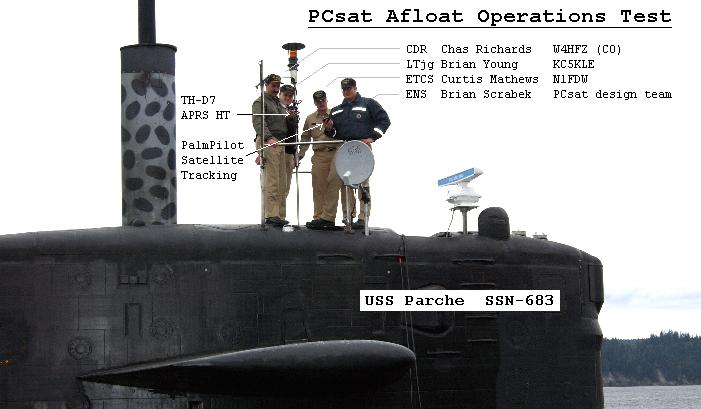
Launch was at 0240z 30 Sept 2001 from the Kodiak Alaska Launch Complex. You can easily track PCsat with any tracking program as NORAD object number 26931. or try Heavens-above.com .
User Services: PCsat was activated for users as of 1930z on 3 Oct and demonstrated (photos) at the 2001 AMSAT Symposium in Atlanta, GA on 5 Oct. Note that due to frequent resets to SAFE mode on orbit which causes PCsat to revert to its pre-launch callsign of W3ADO-1. This call should not be used for digipeatging! Users should read and affirm the PCsat User Service Agreement.
PCsat is a unique design with NO CPU other than two TNC's, and a unique mission for everyone. In this context it is different from all other amateur satellites. We hope you will adhere to the User Service Agreement (1 packet per 2 minutes for routine unattended ops) so that as many people as possible get to operate via PCsat reliably.
The following graphic shows the first 4 orbits starting at separation off the coast of Somalia 70 minutes after launch. The graphic shows what populations of amateur satellite operators first heard signals. As of 0600Z we had heard of confirmations from our Launch Information Network of key stations. (See MAP). Early Reports then came in from Alaska, Hawaii, the SANAE station in Antarctica), and South Africa and in the next 12 hours from everyone around the world.
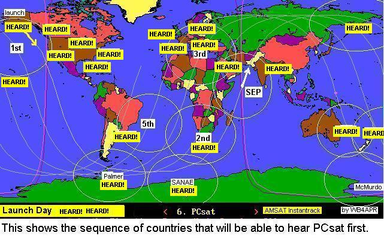
PCsat was an auxilliary payload on the Kodiak Star mission which has a total of 3 amateur satellites on board. The Sapphire satellite is also a Naval Academy mission in a joint venture with Washington University. Starshine is the primary NASA payload and it also uses APRS style telemetry packets. The following frequencies are used:
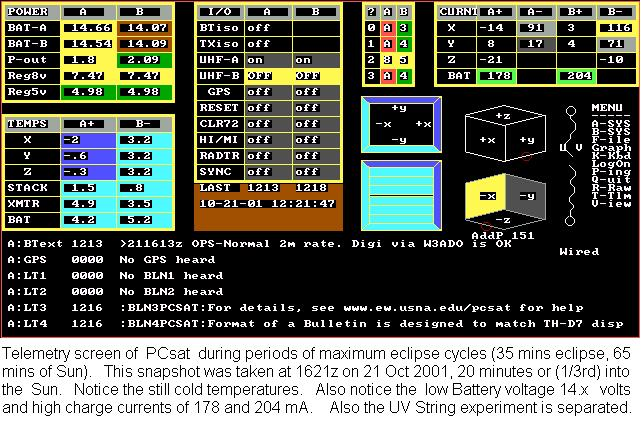
Click here to see the telemetry 50% through the sunny side during periods of maximum eclipse. Click here to see eclipse plot for next 6 months. And here for next year.
COMPLETE TELEMETRY PLOTS: Click Here for complete telemetry graphics covering the period from 1 Dec to 10 March 2002. This data was generated by Steve Dimse's FINDU.COM which is an SQL data base holding all APRS packets captured worldwide.
Here are several additional PHOTOS, DRAWINGS and Documents reorganized by topic:
SPECIAL EVENTS!
STATUS AND LAUNCH INFO:
PHOTO VIEWS:
MECHANICAL DETAILS:
ANTENNA AND EXTERIOR DETIALS:
MODULE DETAILS:
The Space segment of PCsat has been demonstrated a number of times in space via MIR School tests, the Shuttle SAREX, and the SPRE mission. . It is also a spin off of an previous launch opportunity that we had in 1998 called NATSweb that almost got launched on SEA-LAUNCH.. PCsat is a project to produce a viable spacecraft in a very short time frame using off the shelf components where possible. Here are the background topics of design:
APRS is the Automatic Packet Reporting System that the Naval Academy uses for tracking its boats and a variety of other vehicles and networks using the APRS Automatic Packet Reporting System . The Satellite described here in would be operated under the rules of the Amateur Satellite Service and the rules of the FCC. Although the satellite would be developed as a proof of concept for the Naval Academy, it would be available for all radio amateurs and their vehicles.
You are visitor:
since 17 Feb 2001 when old counter was lost.
Average hits have moved up from about 1000 to 2000 per week.
|
|
|
{kind=link}
{kind=link}
{kind=link}
{kind=link}
{kind=link}
{kind=link}
{kind=link}
{kind=link}
{kind=link}
{kind=link}
{kind=link}
{kind=link}
{kind=link}
{kind=link}
{kind=link}
{kind=link}
{kind=link}
{kind=link}
{kind=link}
{kind=link}
{kind=link}
{kind=link}
{kind=link}
{kind=link}
{kind=link}
{kind=link}
{kind=link}
{kind=link}
{kind=link}
{kind=link}
{kind=link}
{kind=link}
{kind=link}
{kind=link}
{kind=link}
{kind=link}
{kind=link}
{kind=link}
{kind=link}
{kind=link}
{kind=link}
{kind=link}
{kind=link}
{kind=link}
{kind=link}
{kind=link}
{kind=link}